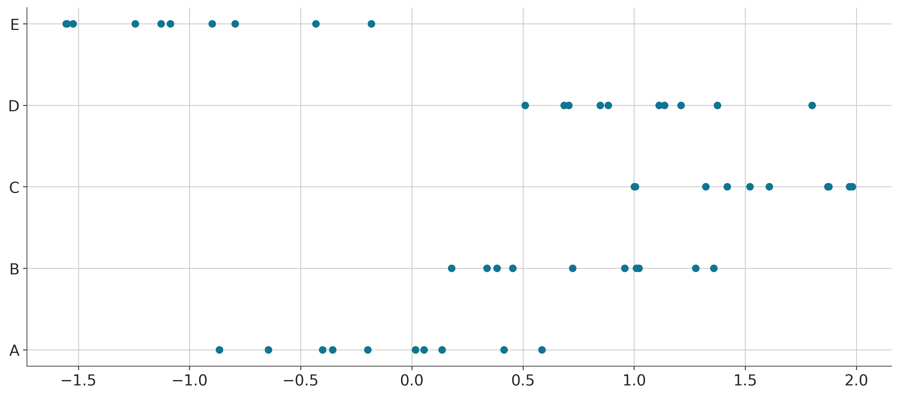
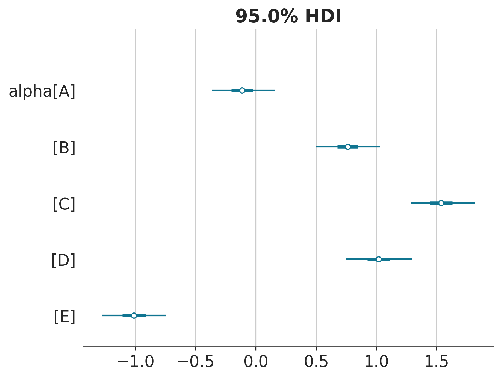
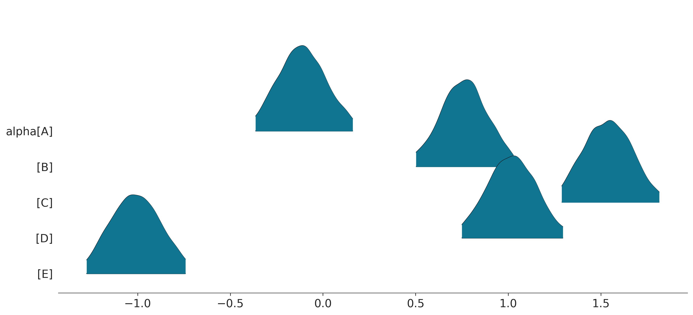

import arviz as az
import pandas as pd
import pymc as pm
import numpy as np
import matplotlib.pyplot as plt
az.style.use("arviz-docgrid")Plotting with PyMC and Arviz
NoteTLDR
This post is about trying to answer a simple question: to what extent does existing functionalities of pymc and arviz implement what can be done in tidybayes …?
Trying to implement the examples here.
RANDOM_SEED = 5
rng = np.random.default_rng(RANDOM_SEED)
n = 10
n_condition = 5
ABC = pd.DataFrame(rng.normal([0, 1, 2, 1, -1], scale=0.5, size=(n, n_condition))).set_axis(['A', 'B', 'C', 'D', 'E'], axis='columns')
ABC = pd.melt(ABC)A snapshot of the data looks like this:
ABC.head(10)| variable | value | |
|---|---|---|
| 0 | A | -0.400966 |
| 1 | A | 0.054853 |
| 2 | A | 0.136384 |
| 3 | A | -0.866067 |
| 4 | A | -0.356657 |
| 5 | A | 0.414928 |
| 6 | A | -0.644709 |
| 7 | A | -0.198095 |
| 8 | A | 0.585148 |
| 9 | A | 0.016529 |
We can try to plot is as follows:
fig, ax = plt.subplots()
ax.scatter(data=ABC, x = "value", y = "variable")
Model
We can fit a hierarchical model with shrinkage towards a global mean. The mathematical formulation is as follows:
\[ \begin{align} \texttt{value} &\sim \mathcal{N}(\alpha_{\text{variable}[i]}, \sigma) \\ \alpha_j &\sim \mathcal{N}(\bar{\alpha}, \sigma_\alpha), j \in [5] \\ \bar{\alpha} &\sim \mathcal{N}(0, 1) \\ \sigma_\alpha &\sim \text{student-t}^+(3, 0, 1) \\ \sigma &\sim \text{student-t}^+(3, 0, 1) \\ \end{align} \]
var_idx, var_value = pd.factorize(ABC['variable'])
coords = {
'var': var_value
}with pm.Model(coords=coords) as ABC_model:
# priors and hyperpriors
alpha_bar = pm.Normal("alpha_bar", 0, 1)
sigma_alpha = pm.HalfStudentT("sigma_alpha", nu=3, sigma=1)
sigma = pm.HalfStudentT("sigma", nu=3, sigma=1)
# likelihood ...?
alpha = pm.Normal("alpha", alpha_bar, sigma_alpha, dims="var")
y_obs = pm.Normal("y_obs", mu=alpha[var_idx],sigma=sigma,observed=ABC['value'])with ABC_model:
idata = pm.sample()Initializing NUTS using jitter+adapt_diag...
Multiprocess sampling (4 chains in 4 jobs)
NUTS: [alpha_bar, sigma_alpha, sigma, alpha]Step Grad Sampli… Progre… Draws Diverg… size evals Speed Elapsed Remaini… ────────────────────────────────────────────────────────────────────────────── ━━━━━━━ 0 0 0.000 0 0.00 0:00:00 -:--:-- draws/s ━━━━━━━ 0 0 0.000 0 0.00 0:00:00 -:--:-- draws/s ━━━━━━━ 0 0 0.000 0 0.00 0:00:00 -:--:-- draws/s ━━━━━━━ 0 0 0.000 0 0.00 0:00:00 -:--:-- draws/s Step Grad Sampli… Progre… Draws Diverg… size evals Speed Elapsed Remaini… ────────────────────────────────────────────────────────────────────────────── ━━━━━━━ 45 0 0.051 15 390.93 0:00:00 0:00:05 draws/s ━━━━━━━ 49 0 0.158 3 424.44 0:00:00 0:00:05 draws/s ━━━━━━━ 47 0 0.133 7 405.11 0:00:00 0:00:05 draws/s ━━━━━━━ 0 0 0.000 0 0.00 0:00:00 -:--:-- draws/s Step Grad Sampli… Progre… Draws Diverg… size evals Speed Elapsed Remaini… ────────────────────────────────────────────────────────────────────────────── ━━━━━━━ 127 0 0.636 7 546.00 0:00:00 0:00:04 draws/s ━━━━━━━ 118 0 0.847 3 507.83 0:00:00 0:00:04 draws/s ━━━━━━━ 119 0 1.151 3 512.95 0:00:00 0:00:04 draws/s ━━━━━━━ 0 0 0.000 0 0.00 0:00:00 -:--:-- draws/s Step Grad Sampli… Progre… Draws Diverg… size evals Speed Elapsed Remaini… ────────────────────────────────────────────────────────────────────────────── ╸━━━━━━ 244 0 0.845 3 709.71 0:00:00 0:00:03 draws/s ╸━━━━━━ 226 0 0.758 3 657.00 0:00:00 0:00:03 draws/s ╸━━━━━━ 217 0 0.788 7 631.74 0:00:00 0:00:03 draws/s ━━━━━━━ 0 0 0.000 0 0.00 0:00:00 -:--:-- draws/s Step Grad Sampli… Progre… Draws Diverg… size evals Speed Elapsed Remaini… ────────────────────────────────────────────────────────────────────────────── ━╺━━━━━ 357 0 0.904 7 773.56 0:00:00 0:00:03 draws/s ━╺━━━━━ 334 0 0.730 7 724.78 0:00:00 0:00:03 draws/s ━╺━━━━━ 320 0 0.629 7 694.23 0:00:00 0:00:03 draws/s ━━━━━━━ 0 0 0.000 0 0.00 0:00:00 -:--:-- draws/s Step Grad Sampli… Progre… Draws Diverg… size evals Speed Elapsed Remaini… ────────────────────────────────────────────────────────────────────────────── ━╸━━━━━ 453 0 0.647 7 793.44 0:00:00 0:00:02 draws/s ━╸━━━━━ 432 0 0.639 7 756.14 0:00:00 0:00:03 draws/s ━╺━━━━━ 419 0 0.414 15 736.74 0:00:00 0:00:03 draws/s ━━━━━━━ 0 0 0.000 0 0.00 0:00:00 -:--:-- draws/s Step Grad Sampli… Progre… Draws Diverg… size evals Speed Elapsed Remaini… ────────────────────────────────────────────────────────────────────────────── ━╸━━━━━ 541 0 0.540 3 787.24 0:00:00 0:00:02 draws/s ━╸━━━━━ 523 0 0.800 3 760.88 0:00:00 0:00:02 draws/s ━╸━━━━━ 510 0 0.522 7 742.39 0:00:00 0:00:02 draws/s ━━━━━━━ 0 0 0.000 0 0.00 0:00:00 -:--:-- draws/s Step Grad Sampli… Progre… Draws Diverg… size evals Speed Elapsed Remaini… ────────────────────────────────────────────────────────────────────────────── ━━╺━━━━ 664 0 0.758 7 826.98 0:00:00 0:00:02 draws/s ━━╺━━━━ 635 0 0.703 7 791.13 0:00:00 0:00:02 draws/s ━━╺━━━━ 619 0 0.794 7 771.48 0:00:00 0:00:02 draws/s ━━━━━━━ 0 0 0.000 0 0.00 0:00:00 -:--:-- draws/s Step Grad Sampli… Progre… Draws Diverg… size evals Speed Elapsed Remaini… ────────────────────────────────────────────────────────────────────────────── ━━╸━━━━ 768 0 0.720 7 837.72 0:00:00 0:00:02 draws/s ━━╸━━━━ 732 0 0.652 7 797.99 0:00:00 0:00:02 draws/s ━━╸━━━━ 724 0 0.695 7 789.58 0:00:00 0:00:02 draws/s ━━━━━━━ 0 0 0.000 0 0.00 0:00:00 -:--:-- draws/s Step Grad Sampli… Progre… Draws Diverg… size evals Speed Elapsed Remaini… ────────────────────────────────────────────────────────────────────────────── ━━━╺━━━ 871 0 0.799 3 844.25 0:00:01 0:00:02 draws/s ━━╸━━━━ 830 0 0.774 7 804.78 0:00:01 0:00:02 draws/s ━━╸━━━━ 814 0 0.708 7 788.90 0:00:01 0:00:02 draws/s ━━━━━━━ 0 0 0.000 0 0.00 0:00:01 -:--:-- draws/s Step Grad Sampli… Progre… Draws Diverg… size evals Speed Elapsed Remaini… ────────────────────────────────────────────────────────────────────────────── ━━━╺━━━ 961 0 0.631 7 840.22 0:00:01 0:00:02 draws/s ━━━╺━━━ 915 0 0.777 3 799.84 0:00:01 0:00:02 draws/s ━━━╺━━━ 903 0 0.805 7 789.23 0:00:01 0:00:02 draws/s ━━━━━━━ 0 0 0.000 0 0.00 0:00:01 -:--:-- draws/s Step Grad Sampli… Progre… Draws Diverg… size evals Speed Elapsed Remaini… ────────────────────────────────────────────────────────────────────────────── ━━━╸━━━ 1068 0 0.703 3 848.47 0:00:01 0:00:02 draws/s ━━━╸━━━ 1021 0 0.702 7 811.02 0:00:01 0:00:02 draws/s ━━━╺━━━ 999 0 0.714 7 793.79 0:00:01 0:00:02 draws/s ━━━━━━━ 3 0 0.047 15 2.38 0:00:01 0:00:04 draws/s Step Grad Sampli… Progre… Draws Diverg… size evals Speed Elapsed Remaini… ────────────────────────────────────────────────────────────────────────────── ━━━━╺━━ 1178 0 0.703 7 859.48 0:00:01 0:00:01 draws/s ━━━╸━━━ 1128 0 0.702 7 822.89 0:00:01 0:00:01 draws/s ━━━╸━━━ 1104 0 0.714 7 805.28 0:00:01 0:00:02 draws/s ━━━━━━━ 54 0 0.123 15 39.41 0:00:01 0:00:05 draws/s Step Grad Sampli… Progre… Draws Diverg… size evals Speed Elapsed Remaini… ────────────────────────────────────────────────────────────────────────────── ━━━━╺━━ 1276 0 0.703 7 859.41 0:00:01 0:00:01 draws/s ━━━━╺━━ 1230 0 0.702 7 828.09 0:00:01 0:00:01 draws/s ━━━━╺━━ 1201 0 0.714 7 809.20 0:00:01 0:00:01 draws/s ━━━━━━━ 117 0 0.847 3 78.75 0:00:01 0:00:04 draws/s Step Grad Sampli… Progre… Draws Diverg… size evals Speed Elapsed Remaini… ────────────────────────────────────────────────────────────────────────────── ━━━━╸━━ 1363 0 0.703 3 851.74 0:00:01 0:00:01 draws/s ━━━━╸━━ 1314 0 0.702 3 821.35 0:00:01 0:00:01 draws/s ━━━━╺━━ 1284 0 0.714 3 802.19 0:00:01 0:00:01 draws/s ╸━━━━━━ 186 0 0.724 7 116.22 0:00:01 0:00:04 draws/s Step Grad Sampli… Progre… Draws Diverg… size evals Speed Elapsed Remaini… ────────────────────────────────────────────────────────────────────────────── ━━━━━╺━ 1468 0 0.703 7 852.74 0:00:01 0:00:01 draws/s ━━━━╸━━ 1414 0 0.702 7 821.66 0:00:01 0:00:01 draws/s ━━━━╸━━ 1387 0 0.714 3 805.88 0:00:01 0:00:01 draws/s ╸━━━━━━ 271 0 0.840 3 157.44 0:00:01 0:00:03 draws/s Step Grad Sampli… Progre… Draws Diverg… size evals Speed Elapsed Remaini… ────────────────────────────────────────────────────────────────────────────── ━━━━━╸━ 1589 0 0.703 7 866.69 0:00:01 0:00:01 draws/s ━━━━━╺━ 1531 0 0.702 7 835.20 0:00:01 0:00:01 draws/s ━━━━━╺━ 1496 0 0.714 3 816.20 0:00:01 0:00:01 draws/s ━╺━━━━━ 376 0 0.763 3 205.16 0:00:01 0:00:03 draws/s Step Grad Sampli… Progre… Draws Diverg… size evals Speed Elapsed Remaini… ────────────────────────────────────────────────────────────────────────────── ━━━━━╸━ 1699 0 0.703 7 873.30 0:00:01 0:00:01 draws/s ━━━━━╸━ 1632 0 0.702 3 838.66 0:00:01 0:00:01 draws/s ━━━━━╸━ 1597 0 0.714 3 820.73 0:00:01 0:00:01 draws/s ━╸━━━━━ 472 0 0.698 3 242.54 0:00:01 0:00:03 draws/s Step Grad Sampli… Progre… Draws Diverg… size evals Speed Elapsed Remaini… ────────────────────────────────────────────────────────────────────────────── ━━━━━━╺ 1803 0 0.703 7 875.02 0:00:02 0:00:01 draws/s ━━━━━━╺ 1738 0 0.702 7 843.39 0:00:02 0:00:01 draws/s ━━━━━╸━ 1707 0 0.714 3 828.27 0:00:02 0:00:01 draws/s ━╸━━━━━ 567 0 0.535 7 275.09 0:00:02 0:00:03 draws/s Step Grad Sampli… Progre… Draws Diverg… size evals Speed Elapsed Remaini… ────────────────────────────────────────────────────────────────────────────── ━━━━━━╸ 1881 0 0.703 3 864.74 0:00:02 0:00:01 draws/s ━━━━━━╺ 1819 0 0.702 3 836.56 0:00:02 0:00:01 draws/s ━━━━━━╺ 1783 0 0.714 3 819.57 0:00:02 0:00:01 draws/s ━━╺━━━━ 634 0 0.468 7 291.50 0:00:02 0:00:02 draws/s Step Grad Sampli… Progre… Draws Diverg… size evals Speed Elapsed Remaini… ────────────────────────────────────────────────────────────────────────────── ━━━━━━╸ 1978 0 0.703 7 861.46 0:00:02 0:00:01 draws/s ━━━━━━╸ 1908 0 0.702 7 831.27 0:00:02 0:00:01 draws/s ━━━━━━╸ 1879 0 0.714 7 818.49 0:00:02 0:00:01 draws/s ━━╸━━━━ 722 0 0.711 7 314.54 0:00:02 0:00:02 draws/s Step Grad Sampli… Progre… Draws Diverg… size evals Speed Elapsed Remaini… ────────────────────────────────────────────────────────────────────────────── ━━━━━━━ 2000 0 0.703 7 857.07 0:00:02 0:00:00 draws/s ━━━━━━╸ 1930 0 0.702 7 827.89 0:00:02 0:00:01 draws/s ━━━━━━╸ 1900 0 0.714 7 814.80 0:00:02 0:00:01 draws/s ━━╸━━━━ 746 0 0.883 3 319.96 0:00:02 0:00:02 draws/s Step Grad Sampli… Progre… Draws Diverg… size evals Speed Elapsed Remaini… ────────────────────────────────────────────────────────────────────────────── ━━━━━━━ 2000 0 0.703 7 857.07 0:00:02 0:00:00 draws/s ━━━━━━╸ 1996 0 0.702 3 827.77 0:00:02 0:00:01 draws/s ━━━━━━╸ 1967 0 0.714 3 815.71 0:00:02 0:00:01 draws/s ━━╸━━━━ 808 0 0.803 3 335.11 0:00:02 0:00:02 draws/s Step Grad Sampli… Progre… Draws Diverg… size evals Speed Elapsed Remaini… ────────────────────────────────────────────────────────────────────────────── ━━━━━━━ 2000 0 0.703 7 857.07 0:00:02 0:00:00 draws/s ━━━━━━━ 2000 0 0.702 3 825.83 0:00:02 0:00:00 draws/s ━━━━━━╸ 1969 0 0.714 3 813.58 0:00:02 0:00:01 draws/s ━━╸━━━━ 809 0 0.863 7 334.67 0:00:02 0:00:02 draws/s Step Grad Sampli… Progre… Draws Diverg… size evals Speed Elapsed Remaini… ────────────────────────────────────────────────────────────────────────────── ━━━━━━━ 2000 0 0.703 7 857.07 0:00:02 0:00:00 draws/s ━━━━━━━ 2000 0 0.702 3 825.83 0:00:02 0:00:00 draws/s ━━━━━━╸ 1969 0 0.714 3 813.58 0:00:02 0:00:01 draws/s ━━╸━━━━ 809 0 0.863 7 334.67 0:00:02 0:00:02 draws/s Step Grad Sampli… Progre… Draws Diverg… size evals Speed Elapsed Remaini… ────────────────────────────────────────────────────────────────────────────── ━━━━━━━ 2000 0 0.703 7 857.07 0:00:02 0:00:00 draws/s ━━━━━━━ 2000 0 0.702 3 825.83 0:00:02 0:00:00 draws/s ━━━━━━━ 2000 0 0.714 7 775.21 0:00:02 0:00:00 draws/s ━━╸━━━━ 840 0 0.838 3 325.79 0:00:02 0:00:02 draws/s Step Grad Sampli… Progre… Draws Diverg… size evals Speed Elapsed Remaini… ────────────────────────────────────────────────────────────────────────────── ━━━━━━━ 2000 0 0.703 7 857.07 0:00:02 0:00:00 draws/s ━━━━━━━ 2000 0 0.702 3 825.83 0:00:02 0:00:00 draws/s ━━━━━━━ 2000 0 0.714 7 775.21 0:00:02 0:00:00 draws/s ━━━╺━━━ 904 0 0.883 7 341.68 0:00:02 0:00:02 draws/s Step Grad Sampli… Progre… Draws Diverg… size evals Speed Elapsed Remaini… ────────────────────────────────────────────────────────────────────────────── ━━━━━━━ 2000 0 0.703 7 857.07 0:00:02 0:00:00 draws/s ━━━━━━━ 2000 0 0.702 3 825.83 0:00:02 0:00:00 draws/s ━━━━━━━ 2000 0 0.714 7 775.21 0:00:02 0:00:00 draws/s ━━━╸━━━ 1053 0 0.581 7 381.85 0:00:02 0:00:02 draws/s Step Grad Sampli… Progre… Draws Diverg… size evals Speed Elapsed Remaini… ────────────────────────────────────────────────────────────────────────────── ━━━━━━━ 2000 0 0.703 7 857.07 0:00:02 0:00:00 draws/s ━━━━━━━ 2000 0 0.702 3 825.83 0:00:02 0:00:00 draws/s ━━━━━━━ 2000 0 0.714 7 775.21 0:00:02 0:00:00 draws/s ━━━━╺━━ 1211 0 0.581 7 421.92 0:00:02 0:00:01 draws/s Step Grad Sampli… Progre… Draws Diverg… size evals Speed Elapsed Remaini… ────────────────────────────────────────────────────────────────────────────── ━━━━━━━ 2000 0 0.703 7 857.07 0:00:02 0:00:00 draws/s ━━━━━━━ 2000 0 0.702 3 825.83 0:00:02 0:00:00 draws/s ━━━━━━━ 2000 0 0.714 7 775.21 0:00:02 0:00:00 draws/s ━━━━╸━━ 1354 0 0.581 7 454.31 0:00:02 0:00:01 draws/s Step Grad Sampli… Progre… Draws Diverg… size evals Speed Elapsed Remaini… ────────────────────────────────────────────────────────────────────────────── ━━━━━━━ 2000 0 0.703 7 857.07 0:00:02 0:00:00 draws/s ━━━━━━━ 2000 0 0.702 3 825.83 0:00:02 0:00:00 draws/s ━━━━━━━ 2000 0 0.714 7 775.21 0:00:02 0:00:00 draws/s ━━━━━╺━ 1508 0 0.581 7 488.12 0:00:03 0:00:01 draws/s Step Grad Sampli… Progre… Draws Diverg… size evals Speed Elapsed Remaini… ────────────────────────────────────────────────────────────────────────────── ━━━━━━━ 2000 0 0.703 7 857.07 0:00:02 0:00:00 draws/s ━━━━━━━ 2000 0 0.702 3 825.83 0:00:02 0:00:00 draws/s ━━━━━━━ 2000 0 0.714 7 775.21 0:00:02 0:00:00 draws/s ━━━━━╸━ 1669 0 0.581 7 521.14 0:00:03 0:00:01 draws/s Step Grad Sampli… Progre… Draws Diverg… size evals Speed Elapsed Remaini… ────────────────────────────────────────────────────────────────────────────── ━━━━━━━ 2000 0 0.703 7 857.07 0:00:02 0:00:00 draws/s ━━━━━━━ 2000 0 0.702 3 825.83 0:00:02 0:00:00 draws/s ━━━━━━━ 2000 0 0.714 7 775.21 0:00:02 0:00:00 draws/s ━━━━━━╺ 1810 0 0.581 7 546.30 0:00:03 0:00:01 draws/s Step Grad Sampli… Progre… Draws Diverg… size evals Speed Elapsed Remaini… ────────────────────────────────────────────────────────────────────────────── ━━━━━━━ 2000 0 0.703 7 857.07 0:00:02 0:00:00 draws/s ━━━━━━━ 2000 0 0.702 3 825.83 0:00:02 0:00:00 draws/s ━━━━━━━ 2000 0 0.714 7 775.21 0:00:02 0:00:00 draws/s ━━━━━━╸ 1972 0 0.581 7 576.50 0:00:03 0:00:01 draws/s Step Grad Sampli… Progre… Draws Diverg… size evals Speed Elapsed Remaini… ────────────────────────────────────────────────────────────────────────────── ━━━━━━━ 2000 0 0.703 7 857.07 0:00:02 0:00:00 draws/s ━━━━━━━ 2000 0 0.702 3 825.83 0:00:02 0:00:00 draws/s ━━━━━━━ 2000 0 0.714 7 775.21 0:00:02 0:00:00 draws/s ━━━━━━━ 2000 0 0.581 7 580.85 0:00:03 0:00:00 draws/s Step Grad Sampli… Progre… Draws Diverg… size evals Speed Elapsed Remaini… ────────────────────────────────────────────────────────────────────────────── ━━━━━━━ 2000 0 0.703 7 857.07 0:00:02 0:00:00 draws/s ━━━━━━━ 2000 0 0.702 3 825.83 0:00:02 0:00:00 draws/s ━━━━━━━ 2000 0 0.714 7 775.21 0:00:02 0:00:00 draws/s ━━━━━━━ 2000 0 0.581 7 580.85 0:00:03 0:00:00 draws/s
Sampling 4 chains for 1_000 tune and 1_000 draw iterations (4_000 + 4_000 draws total) took 16 seconds.idataarviz.InferenceData
-
<xarray.Dataset> Size: 264kB Dimensions: (chain: 4, draw: 1000, var: 5) Coordinates: * chain (chain) int64 32B 0 1 2 3 * draw (draw) int64 8kB 0 1 2 3 4 5 6 ... 993 994 995 996 997 998 999 * var (var) <U1 20B 'A' 'B' 'C' 'D' 'E' Data variables: alpha_bar (chain, draw) float64 32kB 0.555 -0.2105 0.956 ... 0.6464 1.367 alpha (chain, draw, var) float64 160kB -0.02397 0.7852 ... -1.083 sigma_alpha (chain, draw) float64 32kB 1.01 0.8667 0.99 ... 1.338 1.242 sigma (chain, draw) float64 32kB 0.4027 0.4379 ... 0.4077 0.3867 Attributes: created_at: 2025-12-18T15:30:30.411124+00:00 arviz_version: 0.22.0 inference_library: pymc inference_library_version: 5.26.1 sampling_time: 15.825407981872559 tuning_steps: 1000 -
<xarray.Dataset> Size: 528kB Dimensions: (chain: 4, draw: 1000) Coordinates: * chain (chain) int64 32B 0 1 2 3 * draw (draw) int64 8kB 0 1 2 3 4 5 ... 995 996 997 998 999 Data variables: (12/18) tree_depth (chain, draw) int64 32kB 3 2 2 2 3 3 ... 3 2 2 2 3 3 process_time_diff (chain, draw) float64 32kB 0.000901 ... 0.000679 index_in_trajectory (chain, draw) int64 32kB -4 -2 3 -1 ... -1 -2 -2 -2 n_steps (chain, draw) float64 32kB 7.0 3.0 3.0 ... 7.0 7.0 reached_max_treedepth (chain, draw) bool 4kB False False ... False False largest_eigval (chain, draw) float64 32kB nan nan nan ... nan nan ... ... perf_counter_start (chain, draw) float64 32kB 1.216e+05 ... 1.216e+05 acceptance_rate (chain, draw) float64 32kB 0.9024 0.8654 ... 0.9963 energy_error (chain, draw) float64 32kB -0.207 -0.3051 ... -0.4317 max_energy_error (chain, draw) float64 32kB 0.3643 -0.3051 ... -0.5648 step_size (chain, draw) float64 32kB 0.7029 0.7029 ... 0.5808 step_size_bar (chain, draw) float64 32kB 0.7563 0.7563 ... 0.7596 Attributes: created_at: 2025-12-18T15:30:30.439213+00:00 arviz_version: 0.22.0 inference_library: pymc inference_library_version: 5.26.1 sampling_time: 15.825407981872559 tuning_steps: 1000 -
<xarray.Dataset> Size: 800B Dimensions: (y_obs_dim_0: 50) Coordinates: * y_obs_dim_0 (y_obs_dim_0) int64 400B 0 1 2 3 4 5 6 ... 43 44 45 46 47 48 49 Data variables: y_obs (y_obs_dim_0) float64 400B -0.401 0.05485 ... -1.551 -1.128 Attributes: created_at: 2025-12-18T15:30:30.446150+00:00 arviz_version: 0.22.0 inference_library: pymc inference_library_version: 5.26.1
az.summary(idata)| mean | sd | hdi_3% | hdi_97% | mcse_mean | mcse_sd | ess_bulk | ess_tail | r_hat | |
|---|---|---|---|---|---|---|---|---|---|
| alpha_bar | 0.346 | 0.478 | -0.592 | 1.228 | 0.008 | 0.010 | 4015.0 | 2449.0 | 1.0 |
| alpha[A] | -0.115 | 0.135 | -0.360 | 0.140 | 0.002 | 0.002 | 5378.0 | 3192.0 | 1.0 |
| alpha[B] | 0.763 | 0.135 | 0.503 | 1.006 | 0.002 | 0.003 | 4364.0 | 2812.0 | 1.0 |
| alpha[C] | 1.535 | 0.136 | 1.287 | 1.789 | 0.002 | 0.002 | 4715.0 | 3417.0 | 1.0 |
| alpha[D] | 1.015 | 0.139 | 0.752 | 1.268 | 0.002 | 0.002 | 4456.0 | 2437.0 | 1.0 |
| alpha[E] | -1.010 | 0.139 | -1.255 | -0.745 | 0.002 | 0.002 | 5564.0 | 2961.0 | 1.0 |
| sigma_alpha | 1.137 | 0.419 | 0.548 | 1.881 | 0.008 | 0.011 | 3252.0 | 2802.0 | 1.0 |
| sigma | 0.431 | 0.048 | 0.346 | 0.526 | 0.001 | 0.001 | 3680.0 | 2847.0 | 1.0 |
idata.posterior<xarray.Dataset> Size: 264kB
Dimensions: (chain: 4, draw: 1000, var: 5)
Coordinates:
* chain (chain) int64 32B 0 1 2 3
* draw (draw) int64 8kB 0 1 2 3 4 5 6 ... 993 994 995 996 997 998 999
* var (var) <U1 20B 'A' 'B' 'C' 'D' 'E'
Data variables:
alpha_bar (chain, draw) float64 32kB 0.555 -0.2105 0.956 ... 0.6464 1.367
alpha (chain, draw, var) float64 160kB -0.02397 0.7852 ... -1.083
sigma_alpha (chain, draw) float64 32kB 1.01 0.8667 0.99 ... 1.338 1.242
sigma (chain, draw) float64 32kB 0.4027 0.4379 ... 0.4077 0.3867
Attributes:
created_at: 2025-12-18T15:30:30.411124+00:00
arviz_version: 0.22.0
inference_library: pymc
inference_library_version: 5.26.1
sampling_time: 15.825407981872559
tuning_steps: 1000az.plot_forest(idata, combined=True, var_names=["alpha"], hdi_prob=0.95)array([<Axes: title={'center': '95.0% HDI'}>], dtype=object)
Intervals with densities
az.plot_forest(idata, combined=True, var_names=["alpha"], hdi_prob=0.95, kind="ridgeplot")array([<Axes: >], dtype=object)
… yeah the above kind of looks ugly LOL … to actually reproduce the slabinterval geom one would need to do something else …